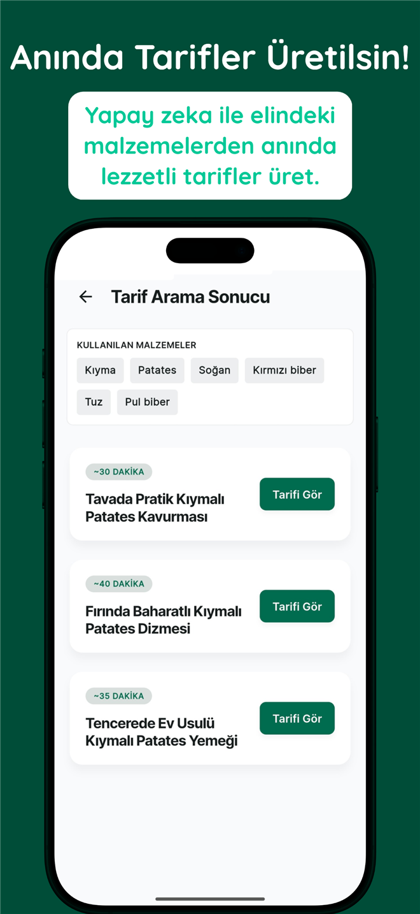
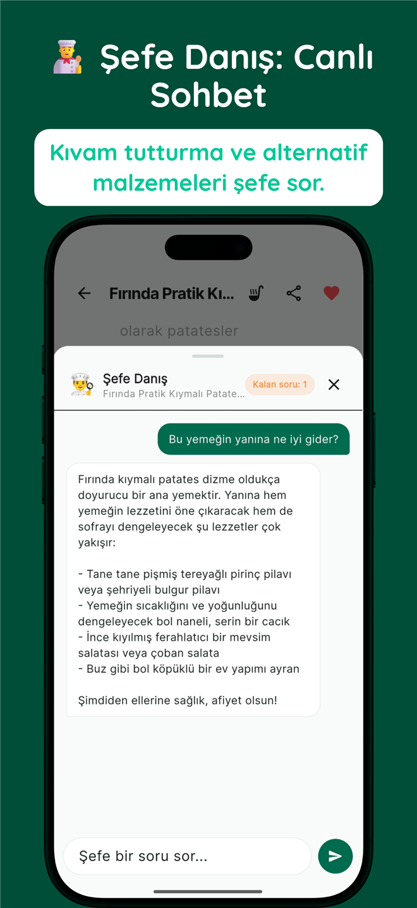
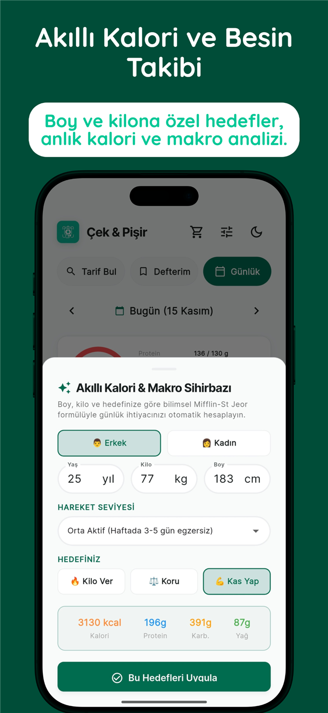

Çek & Pişir ile Dolaptaki Malzemeyi Çek,
Tarifin Saniyeler İçinde Hazır Olsun.
Gbots Studio (gbots.app) tarafından geliştirilen yapay zeka mutfak asistanı ile buzdolabındakilerin fotoğrafını çekin, mikrofonla sesli söyleyin ya da hazır setlerden tek tıkla deneyin; eller serbest pişirin, kalorinizi ve suyunuzu takip edin.
Sadece tarif veren klasik uygulamalardan farklı olarak Çek & Pişir, elindeki malzemeleri fotoğraftan veya sesli komuttan tanır; Şefe Danış canlı sohbeti, el sallayarak temassız pişirme modu, AI tabak çizimi ve 7 günlük kalori/su günlüğü ile mutfaktaki tüm süreci tek çatı altında toplar.

İndirmeden Önce Tarayıcıda Dene
Uygulamanın içindeki "Tek Tıkla Hemen Dene" deneyimini, el sallama modunu ve Şefe Danış sohbetini hemen test et.
1. Evdeki Malzemeni Seç
Aşağıdaki hazır kombinasyonlardan birine dokun; sağdaki ekranda üretilen tarifi, kalorisini ve şef deneyimini anında gör.
Baharatlı Kaşarlı Menemen
~15 Dk • Kolay- Kabuksuz doğranmış domatesleri zeytinyağında orta ateşte suyunu yarı yarıya çekene dek 5 dakika kavurun.
- Tuz ve pul biberi ekleyip çırpılmış yumurtaları tavaya yayın.
- Rende kaşarı serpip kapağını kapatın, 2 dakika sonra sıcak servis edin.
3 Adımda Nasıl Çalışır?
Koltuktan kalkmadan tek tıkla deneyin ya da buzdolabını okutun — mutfakta geçirdiğiniz her dakikayı kolaylaştıran akış.
Malzemeni Çek, Söyle veya Hazır Set Seç
Karanlık dolaplarda kamera flaşını açıp fotoğraf çekin, mikrofonla elinizdekileri sesli söyleyin ya da ana ekrandaki "Tek Tıkla Hemen Dene" setleriyle 3 saniyede örnek tarif üretin. Sevmediğiniz malzemeleri Kara Liste ile engelleyin.
Türk Mutfağı Tarifi, Mutfak Sayacı & Şefe Danış
47+ doğrulanmış yemek kategorisi ve isteğe bağlı ücretsiz AI Tabak Çizimi ile sunumu görün. Pişirirken eksikler için Şefe Danış'a anlık soru sorun; tarif adımlarındaki pişirme süreleri için tek dokunuşla geri sayım başlatın.
Eller Serbest Pişir, Kalori & Suyunu Kaydet
Eliniz hamurlu veya yağlıyken ekrana dokunmadan telefonun üstünden el sallayarak adımları Türkçe sesli dinleyip ilerleyin. Ardından öğünü 7 günlük Kalori & Su günlüğünüze işleyin veya tabağınızı 9:16 Hikaye Kartı olarak paylaşın.
Uygulama İçi Ekranlar
Malzeme taramadan canlı Şefe Danış sohbetine, el sallayarak temassız pişirmeden kalori/makro sihirbazına ve alışveriş listesine kadar tüm ekranlar.
1. Kamera, Galeri & Mini Oyun

2. Malzemeye Göre Anında Tarifler
3. Şefe Danış: Canlı Sohbet 4. El Sallayarak Temassız Pişirme
4. El Sallayarak Temassız Pişirme

5. Kalori & Makro Sihirbazı 6. Akıllı Alışveriş Listem
6. Akıllı Alışveriş Listem
Neden Çek & Pişir?
Mutfakta zaman kazandıran, israfı önleyen ve Türk damak tadıyla beslenme takibini birleştiren akıllı teknolojiler.
Zengin Tarifler & AI Tabak Çizimi
Malzemeleri tanır; hazırlık süresi, zorluk, ateş ayarı ve şefin sırrıyla tarifler üretir. 47+ Türk mutfağı yemek görseliyle veya ücretsiz AI Tabak Çizimi ile sunumu görün.
Sesle, Flaşla & Hızlı Başlangıç
Karanlık dolaplarda kamera flaşını açın, mikrofona konuşarak birden fazla malzemeyi tek seferde ekleyin ya da Hızlı Ekle çipleriyle listenizi saniyeler içinde kurun.
Şefe Danış: Canlı Sohbet
Tarif sırasında aklınıza takılan "Evde süt yok yerine ne koyabilirim?" veya "Sosu nasıl kıvam alır?" sorularına o yemeğe özel yapay zeka şefinizden anlık yanıt alın.
Temassız Pişirme & Akıllı Sayaç
Eliniz kirliyken telefona dokunmadan el sallayarak adım geçin, Türkçe sesli dinleyin. Adımlardaki "15 dakika" gibi süreler için tek dokunuşla mutfak sayacı başlatın.
7 Günlük Kalori, Makro & Su Grafiği
Bilimsel formülle günlük kalori/protein hedefinizi hesaplayın; son 7 günün Kalori & Su grafiğini inceleyin ve Son Eklenenler kısayoluyla saniyede öğün kaydedin.
9:16 Hikaye & Kendi Tabağın
Pişirdiğiniz yemeğin kendi fotoğrafını tarife ekleyin; Instagram ve TikTok hikayelerine özel 1080×1920 dikey şık kartla tek tıkla paylaşın.
Akıllı Alışveriş Listesi
Tarifte evinizde bulunmayan eksik malzemeleri otomatik süzün, tek dokunuşla alışveriş listenize ekleyin ve markette kolayca işaretleyip paylaşın.
Kara Liste & Çevrimdışı Defter
Alerjen veya sevmediğiniz malzemeleri Kara Liste'ye ekleyin, Vegan/Glutensiz filtreleyin. Favori tariflerinizi internetsiz bile defterinizde arayıp açın.
Günün Şef Oyunu & Öğün Kartları
Ana ekrandaki mini şef oyunuyla her gün +1 ekstra tarif hakkı kazanın; kahvaltı ve akşam yemeği saatlerinde gününüze özel akıllı öğün önerileri alın.
Sıkça Sorulan Sorular
Kullanıcılarımızın ve mutfak içerik üreticilerinin en çok merak ettiği konular.